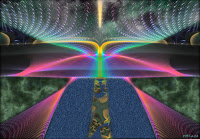

13 Анализ сложностей при возобновлении практики ОС
Несколько месяцев назад я вновь решила вернуться к О.С. Но на этот раз все оказалось сложнее - если тогда мне было достаточно просто думать о полете, и О.С. автоматически появлялся хотя бы раз в неделю, то теперь, несмотря на затраченные усилия, О.С'ы проявляются реже. Я решила проанализировать, почему возобновление практики происходит не так гладко, как я ожидала:
- другие мои практики требовали достаточное количество энергии (такие, как подъем Кундалини, причем, не всегда правильный, иногда с побочными эффектами)
- спонтанное "Перепроживание прошлого". Практика, которуя я начала не так давно, чтобы высвободить энергию из переживаний прошлого. Правда, перепроживания начались спонтанно, в любое время дня и ночи, чего я не ожидала. (всего раз-другой подумала, что хорошо бы этим заняться, теперь оно происходит само по себе, причем порой болезненно). Кидает от воспоминания к воспоминанию, причем таких вещей, о которых я давно забыла.
- сильная поглощенность текущими делами, работой в течение этого времени. Это усугублялось подсознательным ощущением страха, сопровождающим О.С и желанием от этого страха спрятаться.
- нечеткая формулировка задачи для передачи в осознанный сон. Или сразу передача вороха задач: детально изучить сцену, летать, посмотреть на собственные руки (классика жанра...), найти Елену, сконструировать сцену, телепортироваться.. В результате во сне просто забываешь, с чего ты хотел начать.
- путаница со сценами перед переходом в осознанный сон. Не всегда сразу могу решить, в какую сцену следует идти, выбираю так долго, что засыпаю ранее, чем на чем-то остановлюсь. Надо запланировать сцену заранее. Требование к сцене: сцена должна подсознательно быть безопасной. Т.е. если это шоссе, по которому несутся машины, то вероятность проснуться в этой сцене крайне низка, поскольку всеми силами подсознание будет стремиться защитить само себя. Если предполагается действие в пространстве - открытая сцена, т.к. предметы интерьера и прочее порой сильно поглощают внимание.
- игнорирование медитации перед сном с целью остановить внутреннюю болтовню, которая отвлекает от скольжения.
- "Зигзагообразный" режим дня - порой не осознаешь себя и в состоянии бодрствования и не можешь вспомнить, что было вчера. А так же излишний автоматизм в действиях, посещение ограниченного количества мест.
- Недостаток самодисциплины в выполнении упражнений на концентрацию внимания и прочие полезные вещи.
- Желание потакать себе. Позавчера я имела прекрасную возможность себя осознать, но я оказалась в замечательном месте, которое очень не хотелось покидать.
- Перемены в характере. Раньше пробуждение во сне очень часто было связано с тем, что меня кто-то преследовал или случалось что-то сильно неприятное, или я откуда-то падала. Сны с падением прекратились давно, как и все остальные неприятные сны, где за тобой гонятся чудовища а ноги увязают. В моей жизни стало меньше страха и больше уверенности. Похоже, в те разы осознание себя во сне было защитной реакцией организма против происходящего как во сне, так и в реальности. Теперь защищаться стало не от чего - по крайней мере, внутренне мне стало гораздо лучше, поэтому надо искать другие подходы и работать над тем, что раньше у меня выходило само собой. Похоже, это тоже очередная проверка на прочность, которую я пройду.